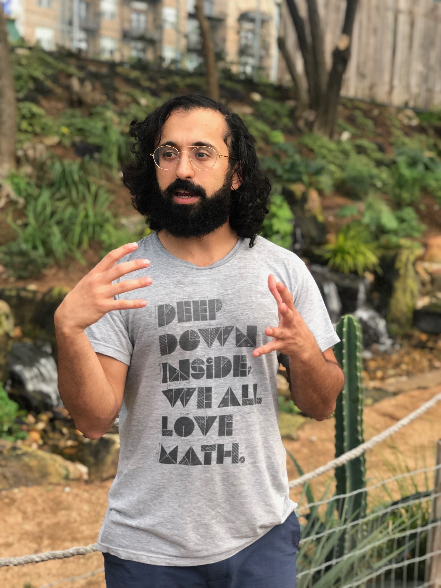
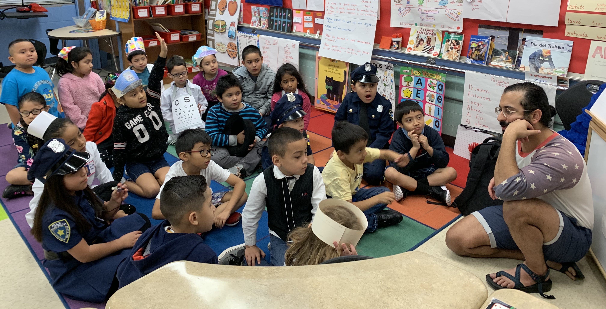

I'm an algebraic topologist by training, with some recent work experience in artificial intelligence and blockchain technologies.

I'm looking for students to work with in Austin, TX!

My approach to learning incorporates mindfulness practice, with an emphasis on developing curiosity, self-confidence, and treating failure as a lifelong teacher. Sharing math with other people is one of my favorite things, no matter the age or subject matter. Whether you are learning about shapes for the first time, need help with your multivariable calculus homework, or looking for a hands-on research project, I'm excited to work with you.
My research in algebraic topology has focused on the homotopy theory of algebraic structures, including
Curved Koszul Duality Theory with Joan Millès and
Model Structures for Coalgebras with Gabriel C. Drummond-Cole.
You can also find video of me speaking about my dissertation work
Derived Noncommutative Deformation Theory and another (almost finished!) project with Gabriel on a
Universal operad for Riemannian manifolds .